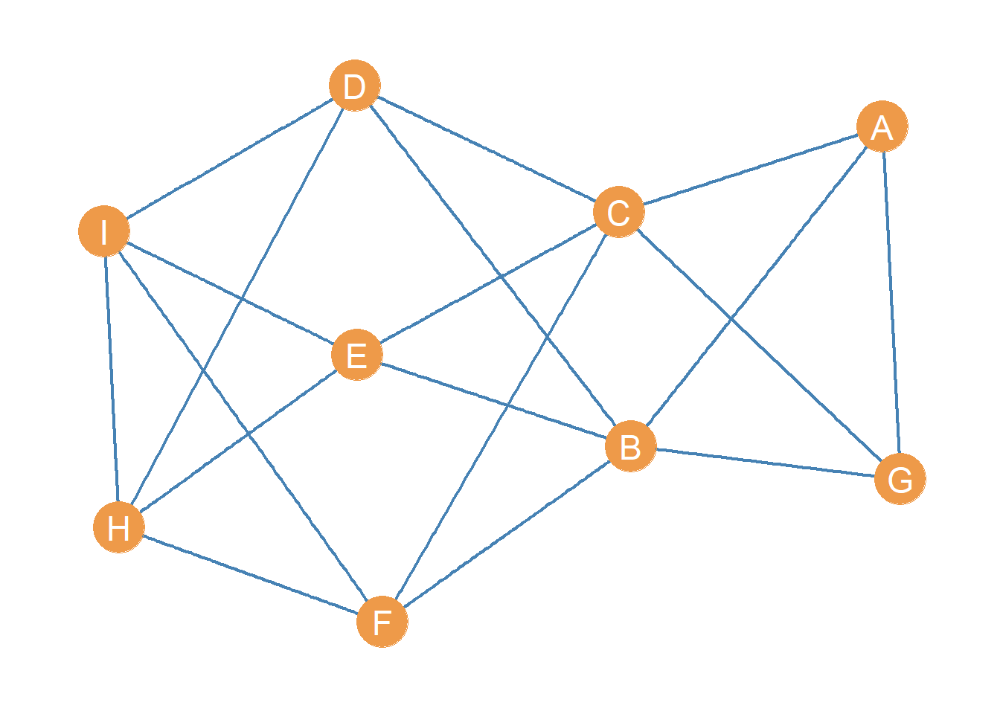

Structural Equivalence
One of the earlier “proofs of concept” of the power of social network analysis came from showing that you could formalize the fuzzy idea of “role” central to functionalist sociology and British social anthropology using the combined tools of graph theoretical and matrix representations of networks (White, Boorman, and Breiger 1976).
This and other contemporaneous work (Breiger, Boorman, and Arabie 1975) set off an entire sub-tradition of data analysis of networks focused on the idea that one could partition the set of vertices in a graph into meaningful classes based on some mathematical (e.g., graph theoretic) criterion.
These classes would in turn be isomorphic with the concept of role as social position and the classes thereby derived as indicating the number of such positions in the social structure under investigation. As a bonus, we would get to find out which actors belonged to which positions.
Structural Equivalence
The earliest work pursued simultaneously by analysts at Harvard (White, Boorman, and Breiger 1976) and Chicago (Burt 1976) relied on the idea of structural equivalence.
In a graph \(G = \{E, V\}\) two nodes \(v_i, v_j\) are structurally equivalent if they are connected to the same others in the network; that is, if \(N(v_i)\) is the set of nodes adjacent to node \(v_i\) and \(N(v_j)\) is the set of nodes adjacent to node \(v_j\), then:
\[ v_i \equiv v_j \iff N(v_i) = N(v_j) \]
In a graph, an equivalence class \(C\) is just a set of nodes that are structurally equivalent, such that if \(v_i \in C_i\) and \(v_j \in C_i\) then \(v_i \equiv v_j\) for all pairs \((v_i, v_j) \in C_i\).
The partitioning of the vertex set into a set of equivalence classes \(\{C_1, C_2 \ldots C_k\}\) as well as the adjacency relations between nodes in the same class and nodes in different classes defines the role structure of the network.
Structural Equivalence in an Ideal World
Let us illustrate these concepts. Consider the following toy graph:
With associated adjacency matrix:
| A | B | C | D | E | F | G | H | I | |
|---|---|---|---|---|---|---|---|---|---|
| A | 0 | 1 | 1 | 0 | 0 | 0 | 1 | 0 | 0 |
| B | 1 | 0 | 0 | 1 | 1 | 1 | 1 | 0 | 0 |
| C | 1 | 0 | 0 | 1 | 1 | 1 | 1 | 0 | 0 |
| D | 0 | 1 | 1 | 0 | 0 | 0 | 0 | 1 | 1 |
| E | 0 | 1 | 1 | 0 | 0 | 0 | 0 | 1 | 1 |
| F | 0 | 1 | 1 | 0 | 0 | 0 | 0 | 1 | 1 |
| G | 1 | 1 | 1 | 0 | 0 | 0 | 0 | 0 | 0 |
| H | 0 | 0 | 0 | 1 | 1 | 1 | 0 | 0 | 1 |
| I | 0 | 0 | 0 | 1 | 1 | 1 | 0 | 1 | 0 |
A simple function to check for structural equivalence in the graph, relying on the native R function setequal would be:
check.equiv <- function(x) {
n <- vcount(x)
v <- V(x)$name
E <- matrix(0, n, n)
for (i in v) {
for (j in v) {
if (i != j & E[which(v == j), which(v == i)] != 1) {
N.i <- neighbors(x, i)
N.j <- neighbors(x, j)
if (are_adjacent(x, i, j) == TRUE) {
N.i <- c(names(N.i), i)
N.j <- c(names(N.j), j)
} #end sub-if
if (setequal(N.i, N.j) == TRUE) {
E[which(v == i), which(v == j)] <- 1
E[which(v == j), which(v == i)] <- 1
} #end sub-if
} #end main if
} #end j loop
} #end i loop
rownames(E) <- v
colnames(E) <- v
return(E)
}This function creates an empty “equivalence” matrix \(\mathbf{E}\) in line 4, loops through each pair of nodes in the graph in lines 5-20. The main condition restricts the checking to nodes that are not the same or have not yet to be found to be equivalent (line 7). Lines 8-9 extract the node neighborhoods using the igraph function neighbors.
Lines 10-13 check to see if the pair of nodes that are being checked for equivalence are themselves adjacent. If they are indeed adjacent (the conditional in line 10 is TRUE) then we need to use the so-called closed neighborhood of \(v_i\) and \(v_j\), written \(N[v_i], N[v_j]\), to do the equivalence check, or otherwise we get the wrong answer.1
The equivalence check is done in line 14 using the native R function setequal. This function takes two inputs (e.g., two vectors) and will return a value of TRUE if the elements in the first vector are the same as the elements in the second vector. In that case we update the matrix \(\mathbf{E}\) accordingly.
After writing our function, we can then type:
And the resulting equivalence matrix \(\mathbf{E}\) corresponding to the graph in Figure 1 is:
| A | B | C | D | E | F | G | H | I | |
|---|---|---|---|---|---|---|---|---|---|
| A | 0 | 0 | 0 | 0 | 0 | 0 | 1 | 0 | 0 |
| B | 0 | 0 | 1 | 0 | 0 | 0 | 0 | 0 | 0 |
| C | 0 | 1 | 0 | 0 | 0 | 0 | 0 | 0 | 0 |
| D | 0 | 0 | 0 | 0 | 1 | 1 | 0 | 0 | 0 |
| E | 0 | 0 | 0 | 1 | 0 | 1 | 0 | 0 | 0 |
| F | 0 | 0 | 0 | 1 | 1 | 0 | 0 | 0 | 0 |
| G | 1 | 0 | 0 | 0 | 0 | 0 | 0 | 0 | 0 |
| H | 0 | 0 | 0 | 0 | 0 | 0 | 0 | 0 | 1 |
| I | 0 | 0 | 0 | 0 | 0 | 0 | 0 | 1 | 0 |
In this matrix, there is a 1 in the corresponding cell if the row node is structurally equivalent to the column node.
One thing we can do with this matrix is re-order the rows and columns, so that rows(columns) corresponding to nodes that are “adjacent” in the equivalence relation appear next to one another in the matrix.
To do that we can use the corrMatOrder function from the corrplot package, designed to work with correlation matrices, but works with any matrix of values:
#install.packages("corrplot")
library(corrplot)
SE.ord <- corrMatOrder(Equiv, order = "hclust", hclust.method = "ward.D2")
SE.ord[1] 6 4 5 8 9 1 7 2 3The corrplot function corrMatorder takes a matrix as input and returns a vector of reordered values of the rows(columns) as output. We use a hierarchical clustering algorithm using Ward’s method to do the job.
We can see that the new re-ordered vector has the previous row(column) 6 in fist position, 4 at second, five at third, 8 at fourth, and so forth.;
We can then re-order rows and columns of the old equivalence matrix using this new ordering by typing:
The resulting re-ordered matrix looks like:
| F | D | E | H | I | A | G | B | C | |
|---|---|---|---|---|---|---|---|---|---|
| F | 0 | 1 | 1 | 0 | 0 | 0 | 0 | 0 | 0 |
| D | 1 | 0 | 1 | 0 | 0 | 0 | 0 | 0 | 0 |
| E | 1 | 1 | 0 | 0 | 0 | 0 | 0 | 0 | 0 |
| H | 0 | 0 | 0 | 0 | 1 | 0 | 0 | 0 | 0 |
| I | 0 | 0 | 0 | 1 | 0 | 0 | 0 | 0 | 0 |
| A | 0 | 0 | 0 | 0 | 0 | 0 | 1 | 0 | 0 |
| G | 0 | 0 | 0 | 0 | 0 | 1 | 0 | 0 | 0 |
| B | 0 | 0 | 0 | 0 | 0 | 0 | 0 | 0 | 1 |
| C | 0 | 0 | 0 | 0 | 0 | 0 | 0 | 1 | 0 |
Once the equivalence matrix is re-ordered we can see that sets of structurally equivalent nodes in Figure 1, appear clustered along the diagonals. This type of re-arranged matrix is said to be in block-diagonal form (e.g., non-zero entries clustered along the diagonals).
Even more interestingly, we can do the same re-arranging on the original adjacency matrix, to reveal:
kbl(A[SE.ord, SE.ord], align = "c", format = "html") %>%
kable_styling(full_width = TRUE,
bootstrap_options = c("hover", "condensed", "responsive")) %>%
column_spec(1, bold = TRUE) %>%
column_spec(1, extra_css = "border-right: 0.75px solid;") %>%
row_spec(c(3, 5, 7), extra_css = "border-bottom: 3px solid;") %>% column_spec(c(4, 6, 8), extra_css = "border-right: 3px solid;") | F | D | E | H | I | A | G | B | C | |
|---|---|---|---|---|---|---|---|---|---|
| F | 0 | 0 | 0 | 1 | 1 | 0 | 0 | 1 | 1 |
| D | 0 | 0 | 0 | 1 | 1 | 0 | 0 | 1 | 1 |
| E | 0 | 0 | 0 | 1 | 1 | 0 | 0 | 1 | 1 |
| H | 1 | 1 | 1 | 0 | 1 | 0 | 0 | 0 | 0 |
| I | 1 | 1 | 1 | 1 | 0 | 0 | 0 | 0 | 0 |
| A | 0 | 0 | 0 | 0 | 0 | 0 | 1 | 1 | 1 |
| G | 0 | 0 | 0 | 0 | 0 | 1 | 0 | 1 | 1 |
| B | 1 | 1 | 1 | 0 | 0 | 1 | 1 | 0 | 0 |
| C | 1 | 1 | 1 | 0 | 0 | 1 | 1 | 0 | 0 |
This is called a blocked adjacency matrix. As you can see, once the structural equivalence relations in the network are revealed by permuting the rows and columns, the adjacency matrix shows an orderly pattern.
The way to interpret the blocked adjacency matrix is as follows:
The block diagonals of the matrix reveal the intra-block relations between sets of structurally equivalent nodes. If the block diagonal is empty–called a zero block–it means that set of structurally equivalent nodes does not connect with one another directly. If it has ones–called a one block–it it means that members of that set of structurally equivalent nodes are also neighbors.
The off diagonal blocks reveals the inter-block adjacency relations between different clusters of structurally equivalent nodes. If an off-diagonal block is a one-block, it means that members of block \(C_i\) send ties to members of block \(C_j\). If and off diagonal block is a zero-block, it means that members of block \(C_i\) avoid associating with members of block \(C_j\).
So if:
\[ C_1 = \{D, E, F\} \]
\[ C_2 = \{H, I\} \]
\[ C_3 = \{A, G\} \]
\[ C_4 = \{B, C\} \]
Then we can see that:
Members of \(C_1\) connect with members of \(C_2\) and \(C_4\) but not among themselves.
Members of \(C_2\) connect among themselves and with \(C_1\).
Members of \(C_3\) connect among themselves and with \(C_4\).
Members of \(C_4\) connect with \(C_1\) and \(C_3\) but avoid associating with their own block.
These intra and inter-block relations can then be represented in the reduced image matrix:
IM <- matrix(0, 4, 4)
IM[1, ] <- c(0, 1, 0, 1)
IM[2, ] <- c(1, 1, 0, 0)
IM[3, ] <- c(0, 0, 1, 1)
IM[4, ] <- c(1, 0, 1, 0)
rownames(IM) <- c("C_1", "C_2", "C_3", "C_4")
colnames(IM) <- c("C_1", "C_2", "C_3", "C_4")
kbl(IM, align = "c", format = "html") %>%
column_spec(1, bold = TRUE) %>%
row_spec(2, extra_css = "border-top: 0.75px solid;") %>%
row_spec(4, extra_css = "border-bottom: 0.75px solid;") %>%
column_spec(1:5, extra_css = "border-right: 0.75px solid;") %>%
kable_styling(full_width = TRUE,
bootstrap_options = c("hover", "condensed", "responsive"))| C_1 | C_2 | C_3 | C_4 | |
|---|---|---|---|---|
| C_1 | 0 | 1 | 0 | 1 |
| C_2 | 1 | 1 | 0 | 0 |
| C_3 | 0 | 0 | 1 | 1 |
| C_4 | 1 | 0 | 1 | 0 |
Which reveals a more economical representation of the system based on structural equivalence.
Structural Equivalence in the Real World
Of course, in real data, it is very unlikely that two nodes will meet the exact mathematical criterion of structural equivalence. They might have three out of five, or eight out of nine common neighbors but would still get a big zero in the \(\mathbf{E}\) defined using our strict function.
So, a lot of role analysis in real networks follows instead searches for a near cousin to structural equivalence. This leads us to the large class of distance and similarity metrics, and the task is to pick one such that structural equivalence falls off as a special case of the given metric.
For random reasons, early work in social network analysis focused on distance metrics, while more recent work inspired by network science focuses on similarity metrics. The end goal is the same though; to cluster nodes in a graph such that those in the same class are the most structurally similar to one another.
Let us, therefore, begin with the distance approach. Here the goal is simply to pick a distance metric \(d\) with a well defined minimum \(d_{min}\) or maximum value \(d_{max}\), such that:
\[ v_i \equiv v_j \iff d(v_i, v_j) = d_{min} \lor d(v_i, v_j) = d_{max} \]
Where whether we pick the maximum or minimum value depends on the particularities of the measure \(d\).
We then populate the \(\mathbf{E}\) matrix with the values of \(d\) for each pair of nodes \((v_i, v_j)\), do some kind of clustering on the matrix, and use our clusters assignments to re-arrange the original adjacency matrix to find our blocks, and so forth.
A very obvious candidate for \(d\) is the Euclidean Distance (Burt 1976):
\[ d_{i,j} = \sqrt{\sum_{k \neq i,j} (a_{ik} - a_{jk})^2} \]
Where \(a_{ik}\) and \(a_{jk}\) are the corresponding entries in the graph’s adjacency matrix \(\mathbf{A}\). The minimum for this measure is \(d_{min} = 0\), so this is the value we should find for structurally equivalent nodes.
A function that does this for any graph is:
d.euclid <- function(x) {
A <- as.matrix(as_adjacency_matrix(x))
n <- nrow(A)
E <- matrix(0, n, n)
for (i in 1:n) {
for (j in 1:n) {
if (i < j & i != j) {
d.ij <- 0
for (k in 1:n) {
if (k != i & k != j) {
d.ij <- d.ij + (A[i,k] - A[j,k])^2
}
}
E[i,j] <- sqrt(d.ij)
E[j,i] <- sqrt(d.ij)
}
}
}
rownames(E) <- rownames(A)
colnames(E) <- colnames(A)
return(E)
}And we can try it out with our toy graph:
A B C D E F G H I
A 0.0 2.0 2.0 1.7 1.7 1.7 0.0 2.6 2.6
B 2.0 0.0 0.0 2.6 2.6 2.6 2.0 1.7 1.7
C 2.0 0.0 0.0 2.6 2.6 2.6 2.0 1.7 1.7
D 1.7 2.6 2.6 0.0 0.0 0.0 1.7 2.0 2.0
E 1.7 2.6 2.6 0.0 0.0 0.0 1.7 2.0 2.0
F 1.7 2.6 2.6 0.0 0.0 0.0 1.7 2.0 2.0
G 0.0 2.0 2.0 1.7 1.7 1.7 0.0 2.6 2.6
H 2.6 1.7 1.7 2.0 2.0 2.0 2.6 0.0 0.0
I 2.6 1.7 1.7 2.0 2.0 2.0 2.6 0.0 0.0And it looks like indeed it detected the structurally equivalent nodes in the graph. We can see it clearly by re-ordering the rows and columns according to our known ordering:
F D E H I A G B C
F 0.0 0.0 0.0 2.0 2.0 1.7 1.7 2.6 2.6
D 0.0 0.0 0.0 2.0 2.0 1.7 1.7 2.6 2.6
E 0.0 0.0 0.0 2.0 2.0 1.7 1.7 2.6 2.6
H 2.0 2.0 2.0 0.0 0.0 2.6 2.6 1.7 1.7
I 2.0 2.0 2.0 0.0 0.0 2.6 2.6 1.7 1.7
A 1.7 1.7 1.7 2.6 2.6 0.0 0.0 2.0 2.0
G 1.7 1.7 1.7 2.6 2.6 0.0 0.0 2.0 2.0
B 2.6 2.6 2.6 1.7 1.7 2.0 2.0 0.0 0.0
C 2.6 2.6 2.6 1.7 1.7 2.0 2.0 0.0 0.0Here the block-diagonals of the matrix contain zeroes because the \(d\) is a distance function with a minimum of zero. If we wanted it to contain ones instead we would normalize:
\[ d^* = 1-\left(\frac{d}{max(d)}\right) \]
Which would give us:
F D E H I A G B C
F 1.0 1.0 1.0 0.2 0.2 0.3 0.3 0.0 0.0
D 1.0 1.0 1.0 0.2 0.2 0.3 0.3 0.0 0.0
E 1.0 1.0 1.0 0.2 0.2 0.3 0.3 0.0 0.0
H 0.2 0.2 0.2 1.0 1.0 0.0 0.0 0.3 0.3
I 0.2 0.2 0.2 1.0 1.0 0.0 0.0 0.3 0.3
A 0.3 0.3 0.3 0.0 0.0 1.0 1.0 0.2 0.2
G 0.3 0.3 0.3 0.0 0.0 1.0 1.0 0.2 0.2
B 0.0 0.0 0.0 0.3 0.3 0.2 0.2 1.0 1.0
C 0.0 0.0 0.0 0.3 0.3 0.2 0.2 1.0 1.0As noted, a distance function defines a clustering on the nodes, and the results of the clustering generate our blocks. In R we can use the functions dist and hclust to do the job:

Which are our original clusters of structurally equivalent nodes!
Let’s see how this would work in real data. Let’s take the Flintstones (film) co-appearance network as an example:
library(networkdata)
library(stringr) #using stringr to change names from all caps to title case
g <- movie_267
V(g)$name <- str_to_title(V(g)$name)
g <- delete_vertices(g, degree(g) <= 3) #deleting low degree vertices
E <- d.euclid(g) #Euclidean distance matrix
E <- as.dist(E) #transforming E to a dist object
h.res <- hclust(E, method = "ward.D2") #hierarchical clustering
plot(h.res) #plot dendrogram The Flintstones is a film based on a family, and families are the prototypes of social roles in networks, so if structural equivalence gets at roles, then it should recover known kin roles here, and indeed it does to some extent. One cluster is the focal parents separated into “moms” and “dads” roles, and another has the kids.
After we have our clustering, we may wish to extract the structurally equivalent blocks from the hierarchical clustering results. To do that, we need to cut the dendrogram at a height that will produce a given number of clusters. Of course because hierarchical clustering is agglomerative, it begins with all nodes in the same cluster and ends with all nodes in a single cluster. So a reasonable solution is some (relatively) small number of clusters \(k\) such that \(1 > k < n\) that is, some number larger than one but smaller than the number of nodes in the graph.
Choosing the number of clusters after a hierarchical clustering is not a well-defined problem, so you have to use a combination of pragmatic and domain-specific knowledge criteria to decide. Here, it looks like four blocks provides enough resolution and substantive interpretability so let’s do that. To do the job we use a function from the dendextend package we used above to draw our pretty colored dendrogram data viz, called cutree which as its name implies cuts the dendrogram at a height that produces the required number of classes:
Bam-Bam Barney Betty Feldspar Fred
1 2 2 3 2
Headmistress Herdmaster Lava Leach Morris
4 3 2 4 4
Mrs Slate Pebbles Pebbles Bam-Bam Piltdown Poindexter
4 1 1 3 4
Pyrite Slate Wilma
3 2 2 Note that the result is a named vector with the node labels as the names and a value of \(k\) for each node, where \(k\) indicates the class of that node. For instance, \(\{\) Barney, Betty, Fred, Lava, Slate, Wilma \(\}\) all belong to \(k = 2\). Remember this is a purely nominal classification so the order of the numbers doesn’t matter.
CONCOR
The other (perhaps less obvious) way of defining a distance between nodes in the network based on their connectivity patterns to other nodes is the correlation distance:
\[ d_{i,j} = \frac{ \sum_{i \neq k} (a_{ki} - \overline{a}_{i}) \times \sum_{j \neq k} (a_{kj} - \overline{a}_{j}) } { \sqrt{ \sum_{i \neq k} (a_{ki} - \overline{a}_{i})^2 \times \sum_{j \neq k} (a_{kj} - \overline{a}_{j})^2 } } \]
A more involved but still meaningful formula compared of the Euclidean distance. Here \(\overline{a}_{i}\) is the column mean of the entries of node \(i\) in the affiliation matrix.
So the correlation distance is the ratio of the covariance of the column vectors corresponding to each node in the adjacency matrix and the product of their standard deviations.
The correlation distance between nodes in our toy network is given by simply typing:
A B C D E F G H I
A 1.00 -0.32 -0.32 0.32 0.32 0.32 0.50 -0.63 -0.63
B -0.32 1.00 1.00 -1.00 -1.00 -1.00 -0.32 0.35 0.35
C -0.32 1.00 1.00 -1.00 -1.00 -1.00 -0.32 0.35 0.35
D 0.32 -1.00 -1.00 1.00 1.00 1.00 0.32 -0.35 -0.35
E 0.32 -1.00 -1.00 1.00 1.00 1.00 0.32 -0.35 -0.35
F 0.32 -1.00 -1.00 1.00 1.00 1.00 0.32 -0.35 -0.35
G 0.50 -0.32 -0.32 0.32 0.32 0.32 1.00 -0.63 -0.63
H -0.63 0.35 0.35 -0.35 -0.35 -0.35 -0.63 1.00 0.55
I -0.63 0.35 0.35 -0.35 -0.35 -0.35 -0.63 0.55 1.00Which gives the Pearson product moment correlation of each pair of columns in the adjacency matrix.
The key thing that was noticed by Breiger, Boorman, and Arabie (1975) is that we can iterate this process, and compute correlation distances of correlation distances between nodes in the graph. If we do this for our toy network a few (e.g., three) times we get:
A B C D E F G H I
A 1 -1 -1 1 1 1 1 -1 -1
B -1 1 1 -1 -1 -1 -1 1 1
C -1 1 1 -1 -1 -1 -1 1 1
D 1 -1 -1 1 1 1 1 -1 -1
E 1 -1 -1 1 1 1 1 -1 -1
F 1 -1 -1 1 1 1 1 -1 -1
G 1 -1 -1 1 1 1 1 -1 -1
H -1 1 1 -1 -1 -1 -1 1 1
I -1 1 1 -1 -1 -1 -1 1 1Interestingly the positive correlations converge to 1.0 and the negative correlations converge to -1.0!
If we sort the rows and columns of the new matrix according to these values, we get:
C.ord <- corrMatOrder(C3, order = "hclust", hclust.method = "ward.D2")
C3 <- C3[C.ord, C.ord]
round(C3, 2) B C H I F D E A G
B 1 1 1 1 -1 -1 -1 -1 -1
C 1 1 1 1 -1 -1 -1 -1 -1
H 1 1 1 1 -1 -1 -1 -1 -1
I 1 1 1 1 -1 -1 -1 -1 -1
F -1 -1 -1 -1 1 1 1 1 1
D -1 -1 -1 -1 1 1 1 1 1
E -1 -1 -1 -1 1 1 1 1 1
A -1 -1 -1 -1 1 1 1 1 1
G -1 -1 -1 -1 1 1 1 1 1Aha! The iterated correlations seems to have split the matrix into two blocks \(C_1 = \{G, F, D, A, G\}\) and \(C_2 = \{I, H, B, C\}\). Each of the blocks is composed of two sub-blocks that we know are structurally equivalent from our previous analysis.
A function implementing this method of iterated correlation distances until convergence looks like:
con.cor <- function(x) {
c <- x
while (mean(abs(c)) != 1) {c <- cor(c)}
names1 <- c[, 1] > 0 #nodes with 1.0 in the first column of converged correlation matrix
names2 <- c[, 1] < 0 #nodes with -1.0 in the first column of converged correlation matrix
a1 <- x[, names1, drop = FALSE] #subsetting original adjacency matrix by column (first block)
a2 <- x[, names2, drop = FALSE] #subsetting original adjacency matrix by column (second block)
return(list(A1 = a1, A2 = a2))
}This function takes a graph’s adjacency matrix as input (x), creates a copy of the adjacency matrix (c) in line 2, to be put through the iterated correlations meat grinder (we will need the original adjacency matrix later). The while loop in line 3 goes through the iterated correlations (stopping when the matrix is full of ones). Then the resulting two blocks are returned as the columns of two partial versions of the original adjacency matrix (a1 and a2) stored in a list.
For instance, to use our example above:
$A1
A D E F G
A 0 0 0 0 1
B 1 1 1 1 1
C 1 1 1 1 1
D 0 0 0 0 0
E 0 0 0 0 0
F 0 0 0 0 0
G 1 0 0 0 0
H 0 1 1 1 0
I 0 1 1 1 0
$A2
B C H I
A 1 1 0 0
B 0 0 0 0
C 0 0 0 0
D 1 1 1 1
E 1 1 1 1
F 1 1 1 1
G 1 1 0 0
H 0 0 0 1
I 0 0 1 0As we can see, the nodes in the columns of these slices of the adjacency matrix are the two blocks we found before.
Of course, to implement this method as a divisive clustering algorithm, what we want is to split these two blocks into two finer-grained blocks, by iterative correlations of the columns of these two sub-adjacency matrices (to reveal two further sub-adjacency matrices each) and thus find our original four structurally equivalent groups.
The following function–simplified and adapted from Adam Slez’s work—which includes the con.cor function shown earlier inside of it, will do it:
This function takes the graph’s adjacency matrix (w) as input and checks to see if it has any column names in line 2. After turning the adjacency matrix into a list object z in line 3, the for loop in line 4 goes for s iterations and populates the list object z with repeated applications of the con.cor function to itself (which are the previous con.cor partitions). Note that the blocks function returns a list object containing the column names of each of the con.cor indicator matrices of structurally equivalent nodes as output rather than the full matrices themselves (like the internal con.cor function does). It does this by applying the colnames function to each of the matrix elements of the resulting z list.
Here’s the blocks function in action for our toy network:
Which are the original four structurally equivalent classes. The argument s in the blocks function controls the number of splits. When it is equal to one, the function produces two blocks, and when it is equal to two it produces four blocks, when it is equal to three, six blocks, and so on.
In a nutshell, this is the algorithm called CONCOR (Breiger, Boorman, and Arabie 1975), short for convergence of iterate correlations, and can be used to cluster the rows(columns) of any valued square data matrix.
For instance, if we wanted to split the Flintstones network into four blocks we would just type:
$A1.A1
[1] "Bam-Bam" "Betty" "Pebbles" "Poindexter" "Wilma"
$A1.A2
[1] "Feldspar" "Herdmaster" "Lava" "Piltdown" "Pyrite"
[6] "Slate"
$A2.A1
[1] "Barney" "Fred" "Leach" "Pebbles Bam-Bam"
$A2.A2
[1] "Headmistress" "Morris" "Mrs Slate" Which is similar to the results we got from the Euclidean distance method, except that now the children are put in the same blocks as the moms.
We could then visualize the results as follows:

Which is just a tile plot of the original adjacency matrix (adjacent cells in black) with rows and columns re-ordered according to the four-block solution and ggplot vertical and horizontal lines highlighting the boundaries of the blocked matrix.
As you can see, characters with similar patterns of scene co-appearances (like Barney and Fred) are drawn next to one another, revealing the larger “roles” in the network.
Note that if we wanted to create an image matrix from this blocking just like we did for our toy graph, we would have to impose a “rule” to generate one or zero blocks in the network. This can be done by choosing a density cutoff for each of the blocks in the network. If the density of the block is above a threshold, then it is a one-block; if it is below, then it is a zero block.
Here’s a function that does that:
image.matrix <- function(x, cut) {
b <- blocks(x)
n <- length(b)
l <- names(b)
im <- matrix(0, n, n)
for (i in 1:n) {
for (j in 1:n) {
sb <- x[b[[i]], b[[j]]]
e <- sum(sb)
r <- nrow(sb)
c <- ncol(sb)
if (i == j) {
d <- e/(r * (c-1))
}
if (i != j) {
d <- e/(r * c)
}
if (d > cut) {im[i, j] <- 1}
}
}
rownames(im) <- l
colnames(im) <- l
return(im)
}And we can then apply to the Flinstones network, using a cutoff of \(c = 0.4\):
A1.A1 A1.A2 A2.A1 A2.A2
A1.A1 1 0 1 1
A1.A2 0 1 1 0
A2.A1 1 1 1 0
A2.A2 1 0 0 1Which shows that the main “domestic” block of Wilma, Betty, Pebbles and Bam Bam (A1.A1) is connected to all the blocks except the block composed of mostly workplace characters (A1.A2), suggesting a strong division between work and home.
Structural Equivalence in Directed Graphs
Like before, the main complication introduced by the directed case is the “doubling” of the relations considered.
In the Euclidean distance case, we have to decide whether we want to compute two set of distances between nodes, one based on the in-distance vectors and the other on the out-distance vectors, and the two sets of hierarchical clustering partitions.
Another approach is simply to combine both according to the formula:
\[ d_{i,j} = \sqrt{ \sum_{k \neq i,j} (a_{ik} - a_{jk})^2 + \sum_{k \neq i,j} (a_{ki} - a_{kj})^2 } \]
Which just computes the Euclidean distances between nodes using both in and out neighbors. Here nodes would be structurally equivalent only if they have the same set of in and out-neighbors. This would mean replacing line 11 in the function d.euclid above with the following:
This way, distances are computed on both the row and columns of the directed graph’s adjacency matrix.
If we are using the correlation distance approach in a directed graph, then the main trick is to stack the original adjacency matrix against its transpose, and then compute the correlation distance on the columns of the stacked matrices, which by definition combines information in incoming and outgoing ties.
Let’s see a brief example. Let’s load up the Krackhardt’s high-tech managers data on advice relations and look at the adjacency matrix:
[,1] [,2] [,3] [,4] [,5] [,6] [,7] [,8] [,9] [,10] [,11] [,12] [,13]
[1,] 0 1 0 1 0 0 0 1 0 0 0 0 0
[2,] 0 0 0 0 0 1 1 0 0 0 0 0 0
[3,] 1 1 0 1 0 1 1 1 1 1 1 1 0
[4,] 1 1 0 0 0 1 0 1 0 1 1 1 0
[5,] 1 1 0 0 0 1 1 1 0 1 1 0 1
[6,] 0 0 0 0 0 0 0 0 0 0 0 0 0
[7,] 0 1 0 0 0 1 0 0 0 0 1 1 0
[8,] 0 1 0 1 0 1 1 0 0 1 1 0 0
[9,] 1 1 0 0 0 1 1 1 0 1 1 1 0
[10,] 1 1 1 1 1 0 0 1 0 0 1 0 1
[11,] 1 1 0 0 0 0 1 0 0 0 0 0 0
[12,] 0 0 0 0 0 0 1 0 0 0 0 0 0
[13,] 1 1 0 0 1 0 0 0 1 0 0 0 0
[14,] 0 1 0 0 0 0 1 0 0 0 0 0 0
[15,] 1 1 1 1 1 1 1 1 1 1 1 1 1
[16,] 1 1 0 0 0 0 0 0 0 1 0 0 0
[17,] 1 1 0 1 0 0 1 0 0 0 0 0 0
[18,] 1 1 1 1 1 0 1 1 1 1 1 0 1
[19,] 1 1 1 0 1 0 1 0 0 1 1 0 0
[20,] 1 1 0 0 0 1 0 1 0 0 1 1 0
[21,] 0 1 1 1 0 1 1 1 0 0 0 1 0
[,14] [,15] [,16] [,17] [,18] [,19] [,20] [,21]
[1,] 0 0 1 0 1 0 0 1
[2,] 0 0 0 0 0 0 0 1
[3,] 1 0 0 1 1 0 1 1
[4,] 0 0 1 1 1 0 1 1
[5,] 1 0 1 1 1 1 1 1
[6,] 0 0 0 0 0 0 0 1
[7,] 1 0 0 1 1 0 0 1
[8,] 0 0 0 0 1 0 0 1
[9,] 1 0 1 1 1 0 0 1
[10,] 0 1 1 1 1 1 1 0
[11,] 0 0 0 0 0 0 0 0
[12,] 0 0 0 0 0 0 0 1
[13,] 1 0 0 0 1 0 0 0
[14,] 0 0 0 0 1 0 0 1
[15,] 1 0 1 1 1 1 1 1
[16,] 0 0 0 0 1 0 0 0
[17,] 0 0 0 0 0 0 0 1
[18,] 1 1 1 0 0 1 1 1
[19,] 1 1 0 0 1 0 1 0
[20,] 1 1 1 1 1 0 0 1
[21,] 1 0 0 1 1 0 1 0Recall that in these data a tie goes from an advice seeker to an advisor. So the standard correlation distance on the columns computes the in-correlation, or structural equivalence based on incoming ties (two managers are equivalent if they are nominated as advisors by the same others).
We may also be interested in the out-correlation, that is structural equivalence based on out-going ties. Here two managers are structurally equivalent is they seek advice from the same others. This information is contained in the transpose of the original adjacency matrix:
[,1] [,2] [,3] [,4] [,5] [,6] [,7] [,8] [,9] [,10] [,11] [,12] [,13]
[1,] 0 0 1 1 1 0 0 0 1 1 1 0 1
[2,] 1 0 1 1 1 0 1 1 1 1 1 0 1
[3,] 0 0 0 0 0 0 0 0 0 1 0 0 0
[4,] 1 0 1 0 0 0 0 1 0 1 0 0 0
[5,] 0 0 0 0 0 0 0 0 0 1 0 0 1
[6,] 0 1 1 1 1 0 1 1 1 0 0 0 0
[7,] 0 1 1 0 1 0 0 1 1 0 1 1 0
[8,] 1 0 1 1 1 0 0 0 1 1 0 0 0
[9,] 0 0 1 0 0 0 0 0 0 0 0 0 1
[10,] 0 0 1 1 1 0 0 1 1 0 0 0 0
[11,] 0 0 1 1 1 0 1 1 1 1 0 0 0
[12,] 0 0 1 1 0 0 1 0 1 0 0 0 0
[13,] 0 0 0 0 1 0 0 0 0 1 0 0 0
[14,] 0 0 1 0 1 0 1 0 1 0 0 0 1
[15,] 0 0 0 0 0 0 0 0 0 1 0 0 0
[16,] 1 0 0 1 1 0 0 0 1 1 0 0 0
[17,] 0 0 1 1 1 0 1 0 1 1 0 0 0
[18,] 1 0 1 1 1 0 1 1 1 1 0 0 1
[19,] 0 0 0 0 1 0 0 0 0 1 0 0 0
[20,] 0 0 1 1 1 0 0 0 0 1 0 0 0
[21,] 1 1 1 1 1 1 1 1 1 0 0 1 0
[,14] [,15] [,16] [,17] [,18] [,19] [,20] [,21]
[1,] 0 1 1 1 1 1 1 0
[2,] 1 1 1 1 1 1 1 1
[3,] 0 1 0 0 1 1 0 1
[4,] 0 1 0 1 1 0 0 1
[5,] 0 1 0 0 1 1 0 0
[6,] 0 1 0 0 0 0 1 1
[7,] 1 1 0 1 1 1 0 1
[8,] 0 1 0 0 1 0 1 1
[9,] 0 1 0 0 1 0 0 0
[10,] 0 1 1 0 1 1 0 0
[11,] 0 1 0 0 1 1 1 0
[12,] 0 1 0 0 0 0 1 1
[13,] 0 1 0 0 1 0 0 0
[14,] 0 1 0 0 1 1 1 1
[15,] 0 0 0 0 1 1 1 0
[16,] 0 1 0 0 1 0 1 0
[17,] 0 1 0 0 0 0 1 1
[18,] 1 1 1 0 0 1 1 1
[19,] 0 1 0 0 1 0 0 0
[20,] 0 1 0 0 1 1 0 1
[21,] 1 1 0 1 1 0 1 0Correlating the columns of this matrix would thus give us the out-correlation distance based on advice seeking relations.
“Stacking” is a way to combine both in and out-going ties and compute a single distance based on both. It just means that we literally bind the rows of the firs matrix and its transpose:
[,1] [,2] [,3] [,4] [,5] [,6] [,7] [,8] [,9] [,10] [,11] [,12] [,13]
[1,] 0 1 0 1 0 0 0 1 0 0 0 0 0
[2,] 0 0 0 0 0 1 1 0 0 0 0 0 0
[3,] 1 1 0 1 0 1 1 1 1 1 1 1 0
[4,] 1 1 0 0 0 1 0 1 0 1 1 1 0
[5,] 1 1 0 0 0 1 1 1 0 1 1 0 1
[6,] 0 0 0 0 0 0 0 0 0 0 0 0 0
[7,] 0 1 0 0 0 1 0 0 0 0 1 1 0
[8,] 0 1 0 1 0 1 1 0 0 1 1 0 0
[9,] 1 1 0 0 0 1 1 1 0 1 1 1 0
[10,] 1 1 1 1 1 0 0 1 0 0 1 0 1
[11,] 1 1 0 0 0 0 1 0 0 0 0 0 0
[12,] 0 0 0 0 0 0 1 0 0 0 0 0 0
[13,] 1 1 0 0 1 0 0 0 1 0 0 0 0
[14,] 0 1 0 0 0 0 1 0 0 0 0 0 0
[15,] 1 1 1 1 1 1 1 1 1 1 1 1 1
[16,] 1 1 0 0 0 0 0 0 0 1 0 0 0
[17,] 1 1 0 1 0 0 1 0 0 0 0 0 0
[18,] 1 1 1 1 1 0 1 1 1 1 1 0 1
[19,] 1 1 1 0 1 0 1 0 0 1 1 0 0
[20,] 1 1 0 0 0 1 0 1 0 0 1 1 0
[21,] 0 1 1 1 0 1 1 1 0 0 0 1 0
[22,] 0 0 1 1 1 0 0 0 1 1 1 0 1
[23,] 1 0 1 1 1 0 1 1 1 1 1 0 1
[24,] 0 0 0 0 0 0 0 0 0 1 0 0 0
[25,] 1 0 1 0 0 0 0 1 0 1 0 0 0
[26,] 0 0 0 0 0 0 0 0 0 1 0 0 1
[27,] 0 1 1 1 1 0 1 1 1 0 0 0 0
[28,] 0 1 1 0 1 0 0 1 1 0 1 1 0
[29,] 1 0 1 1 1 0 0 0 1 1 0 0 0
[30,] 0 0 1 0 0 0 0 0 0 0 0 0 1
[31,] 0 0 1 1 1 0 0 1 1 0 0 0 0
[32,] 0 0 1 1 1 0 1 1 1 1 0 0 0
[33,] 0 0 1 1 0 0 1 0 1 0 0 0 0
[34,] 0 0 0 0 1 0 0 0 0 1 0 0 0
[35,] 0 0 1 0 1 0 1 0 1 0 0 0 1
[36,] 0 0 0 0 0 0 0 0 0 1 0 0 0
[37,] 1 0 0 1 1 0 0 0 1 1 0 0 0
[38,] 0 0 1 1 1 0 1 0 1 1 0 0 0
[39,] 1 0 1 1 1 0 1 1 1 1 0 0 1
[40,] 0 0 0 0 1 0 0 0 0 1 0 0 0
[41,] 0 0 1 1 1 0 0 0 0 1 0 0 0
[42,] 1 1 1 1 1 1 1 1 1 0 0 1 0
[,14] [,15] [,16] [,17] [,18] [,19] [,20] [,21]
[1,] 0 0 1 0 1 0 0 1
[2,] 0 0 0 0 0 0 0 1
[3,] 1 0 0 1 1 0 1 1
[4,] 0 0 1 1 1 0 1 1
[5,] 1 0 1 1 1 1 1 1
[6,] 0 0 0 0 0 0 0 1
[7,] 1 0 0 1 1 0 0 1
[8,] 0 0 0 0 1 0 0 1
[9,] 1 0 1 1 1 0 0 1
[10,] 0 1 1 1 1 1 1 0
[11,] 0 0 0 0 0 0 0 0
[12,] 0 0 0 0 0 0 0 1
[13,] 1 0 0 0 1 0 0 0
[14,] 0 0 0 0 1 0 0 1
[15,] 1 0 1 1 1 1 1 1
[16,] 0 0 0 0 1 0 0 0
[17,] 0 0 0 0 0 0 0 1
[18,] 1 1 1 0 0 1 1 1
[19,] 1 1 0 0 1 0 1 0
[20,] 1 1 1 1 1 0 0 1
[21,] 1 0 0 1 1 0 1 0
[22,] 0 1 1 1 1 1 1 0
[23,] 1 1 1 1 1 1 1 1
[24,] 0 1 0 0 1 1 0 1
[25,] 0 1 0 1 1 0 0 1
[26,] 0 1 0 0 1 1 0 0
[27,] 0 1 0 0 0 0 1 1
[28,] 1 1 0 1 1 1 0 1
[29,] 0 1 0 0 1 0 1 1
[30,] 0 1 0 0 1 0 0 0
[31,] 0 1 1 0 1 1 0 0
[32,] 0 1 0 0 1 1 1 0
[33,] 0 1 0 0 0 0 1 1
[34,] 0 1 0 0 1 0 0 0
[35,] 0 1 0 0 1 1 1 1
[36,] 0 0 0 0 1 1 1 0
[37,] 0 1 0 0 1 0 1 0
[38,] 0 1 0 0 0 0 1 1
[39,] 1 1 1 0 0 1 1 1
[40,] 0 1 0 0 1 0 0 0
[41,] 0 1 0 0 1 1 0 1
[42,] 1 1 0 1 1 0 1 0Note that this matrix has the same number of columns as the original adjacency matrix and double the number of rows. This doesn’t matter since the correlation distance works on the columns, meaning that it will return a matrix of the same dimensions as the original:
[,1] [,2] [,3] [,4] [,5] [,6] [,7] [,8] [,9] [,10] [,11] [,12]
[1,] 1.00 0.43 0.00 0.09 0.09 0.22 0.14 0.37 0.13 0.25 0.37 0.22
[2,] 0.43 1.00 -0.19 0.00 -0.19 0.49 0.24 0.38 -0.15 -0.24 0.51 0.52
[3,] 0.00 -0.19 1.00 0.52 0.62 -0.24 0.19 0.33 0.57 0.00 0.03 -0.03
[4,] 0.09 0.00 0.52 1.00 0.43 -0.03 0.29 0.33 0.57 0.10 0.03 -0.03
[5,] 0.09 -0.19 0.62 0.43 1.00 -0.35 0.00 0.14 0.67 0.20 0.03 -0.15
[6,] 0.22 0.49 -0.24 -0.03 -0.35 1.00 0.27 0.36 -0.16 0.00 0.50 0.74
[7,] 0.14 0.24 0.19 0.29 0.00 0.27 1.00 0.19 0.24 -0.05 0.10 0.06
[8,] 0.37 0.38 0.33 0.33 0.14 0.36 0.19 1.00 0.27 0.01 0.41 0.49
[9,] 0.13 -0.15 0.57 0.57 0.67 -0.16 0.24 0.27 1.00 0.07 0.03 0.04
[10,] 0.25 -0.24 0.00 0.10 0.20 0.00 -0.05 0.01 0.07 1.00 0.24 -0.11
[11,] 0.37 0.51 0.03 0.03 0.03 0.50 0.10 0.41 0.03 0.24 1.00 0.49
[12,] 0.22 0.52 -0.03 -0.03 -0.15 0.74 0.06 0.49 0.04 -0.11 0.49 1.00
[13,] 0.17 -0.11 0.36 0.14 0.25 -0.08 0.11 0.19 0.22 0.17 0.32 -0.16
[14,] 0.47 0.51 0.13 0.03 0.13 0.50 0.30 0.51 0.24 0.03 0.57 0.62
[15,] -0.08 -0.48 0.63 0.25 0.63 -0.47 -0.19 0.07 0.42 0.18 -0.10 -0.25
[16,] 0.38 0.21 0.14 0.24 0.14 0.22 0.00 0.62 0.12 0.15 0.56 0.18
[17,] 0.37 0.40 0.13 0.03 -0.07 0.61 0.00 0.61 0.03 0.03 0.68 0.74
[18,] 0.06 0.11 -0.03 -0.14 0.09 0.21 -0.45 0.15 -0.11 0.28 0.28 0.29
[19,] -0.08 -0.25 0.38 0.18 0.38 -0.22 -0.05 0.26 0.30 0.28 0.21 -0.15
[20,] 0.28 0.00 0.52 0.52 0.43 0.08 0.38 0.33 0.57 0.29 0.24 0.08
[21,] 0.02 0.10 -0.04 0.06 -0.23 0.24 0.29 0.18 0.05 -0.02 0.24 0.17
[,13] [,14] [,15] [,16] [,17] [,18] [,19] [,20] [,21]
[1,] 0.17 0.47 -0.08 0.38 0.37 0.06 -0.08 0.28 0.02
[2,] -0.11 0.51 -0.48 0.21 0.40 0.11 -0.25 0.00 0.10
[3,] 0.36 0.13 0.63 0.14 0.13 -0.03 0.38 0.52 -0.04
[4,] 0.14 0.03 0.25 0.24 0.03 -0.14 0.18 0.52 0.06
[5,] 0.25 0.13 0.63 0.14 -0.07 0.09 0.38 0.43 -0.23
[6,] -0.08 0.50 -0.47 0.22 0.61 0.21 -0.22 0.08 0.24
[7,] 0.11 0.30 -0.19 0.00 0.00 -0.45 -0.05 0.38 0.29
[8,] 0.19 0.51 0.07 0.62 0.61 0.15 0.26 0.33 0.18
[9,] 0.22 0.24 0.42 0.12 0.03 -0.11 0.30 0.57 0.05
[10,] 0.17 0.03 0.18 0.15 0.03 0.28 0.28 0.29 -0.02
[11,] 0.32 0.57 -0.10 0.56 0.68 0.28 0.21 0.24 0.24
[12,] -0.16 0.62 -0.25 0.18 0.74 0.29 -0.15 0.08 0.17
[13,] 1.00 0.20 0.26 0.51 0.20 0.05 0.63 0.36 -0.02
[14,] 0.20 1.00 -0.10 0.34 0.57 0.16 0.11 0.24 0.14
[15,] 0.26 -0.10 1.00 0.02 -0.10 0.08 0.34 0.25 -0.18
[16,] 0.51 0.34 0.02 1.00 0.45 0.11 0.41 0.24 0.17
[17,] 0.20 0.57 -0.10 0.45 1.00 0.40 0.11 0.24 0.14
[18,] 0.05 0.16 0.08 0.11 0.40 1.00 0.18 -0.03 -0.32
[19,] 0.63 0.11 0.34 0.41 0.11 0.18 1.00 0.28 -0.03
[20,] 0.36 0.24 0.25 0.24 0.24 -0.03 0.28 1.00 -0.04
[21,] -0.02 0.14 -0.18 0.17 0.14 -0.32 -0.03 -0.04 1.00And we would then do a blockmodel based on these distances:
Structural Equivalence in Multigraphs
Note that we would apply the same trick if we wanted to do a blockmodel based on multiple relations like friendship and advice. Here’s a blockmodel based on the stacked matrices of incoming ties of both types:
$A1.A1
[1] "v_1" "v_3" "v_5" "v_14" "v_15" "v_20"
$A1.A2
[1] "v_4" "v_9" "v_13" "v_19"
$A2.A1
[1] "v_2" "v_8" "v_12" "v_16" "v_17" "v_18"
$A2.A2
[1] "v_6" "v_7" "v_10" "v_11" "v_21"And one combining incoming and outgoing friendship and advice ties:
$A1.A1
[1] "v_1" "v_2" "v_8" "v_16" "v_21"
$A1.A2
[1] "v_6" "v_11" "v_12" "v_14" "v_17"
$A2.A1
[1] "v_3" "v_4" "v_5" "v_7" "v_9" "v_20"
$A2.A2
[1] "v_10" "v_13" "v_15" "v_18" "v_19"Note that here the stacked matrix has four sub-matrices: (1) Incoming advice, (2) outgoing advice, (3) incoming friendship, and (4) Outgoing friendship.
References
Breiger, Ronald L, Scott A Boorman, and Phipps Arabie. 1975. “An Algorithm for Clustering Relational Data with Applications to Social Network Analysis and Comparison with Multidimensional Scaling.” Journal of Mathematical Psychology 12 (3): 328–83.
Burt, Ronald S. 1976. “Positions in Networks.” Social Forces 55 (1): 93–122.
White, Harrison C, Scott A Boorman, and Ronald L Breiger. 1976. “Social Structure from Multiple Networks. I. Blockmodels of Roles and Positions.” American Journal of Sociology 81 (4): 730–80.
Footnotes
The closed neighborhood of a node is that which includes nodes adjacent to it and the node itself.↩︎